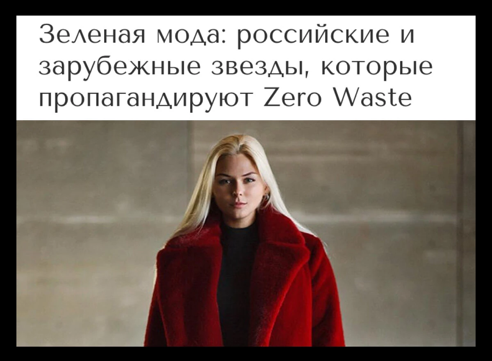
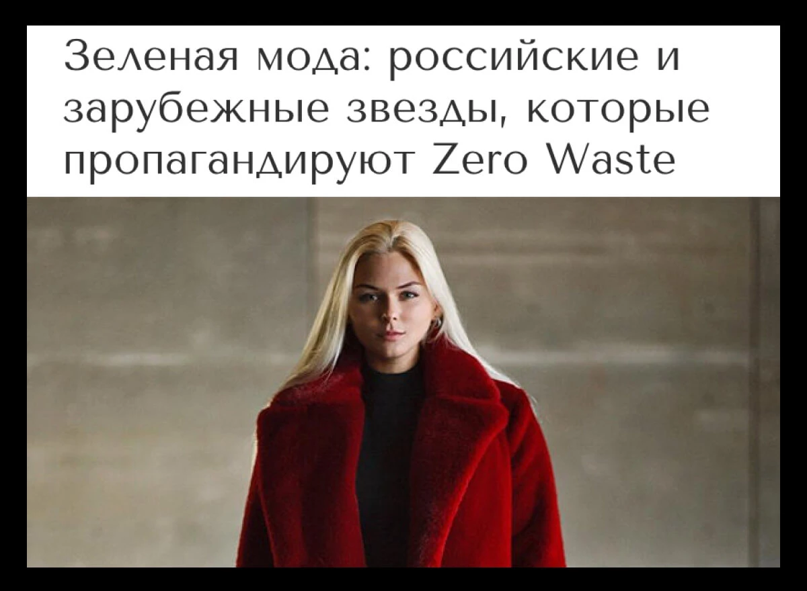
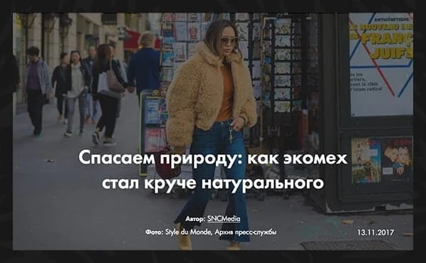
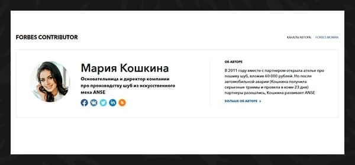
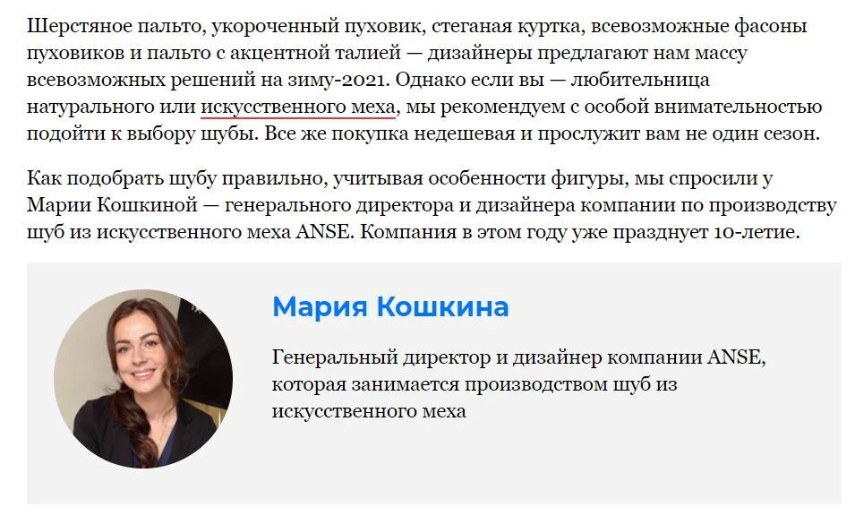

Зеленая мода: российские и зарубежные звезды, которые пропагандируют Zero Waste
«Как вы знаете, сегодня в моде экологичность и этичность по отношению к природе. Это касается, прежде всего, использования животного меха и кожи.»
«Как вы знаете, сегодня в моде экологичность и этичность по отношению к природе. Это касается, прежде всего, использования животного меха и кожи.»
«Еще шесть лет назад шубы из экомеха расценивались не иначе, как дешевая подделка «настоящей» шубы из животного меха. Мы как раз тогда только начинали работать, и я хорошо помню это время. Рынок не был подготовлен, но было ощущение что скоро мы придем к пониманию истинной ценности этичных материалов.»
«Первые 300 заказов мы принимали именно в «Вконтакте», а сайт, торговые представители в регионах, магазины в Москве и Санкт-Петербурге появились позднее.»
«Как подобрать шубу правильно, учитывая особенности фигуры, мы спросили у Марии Кошкиной — генерального директора и дизайнера компании по производству шуб из искусственного меха ANSE. Компания в этом году уже празднует 10-летие.»
